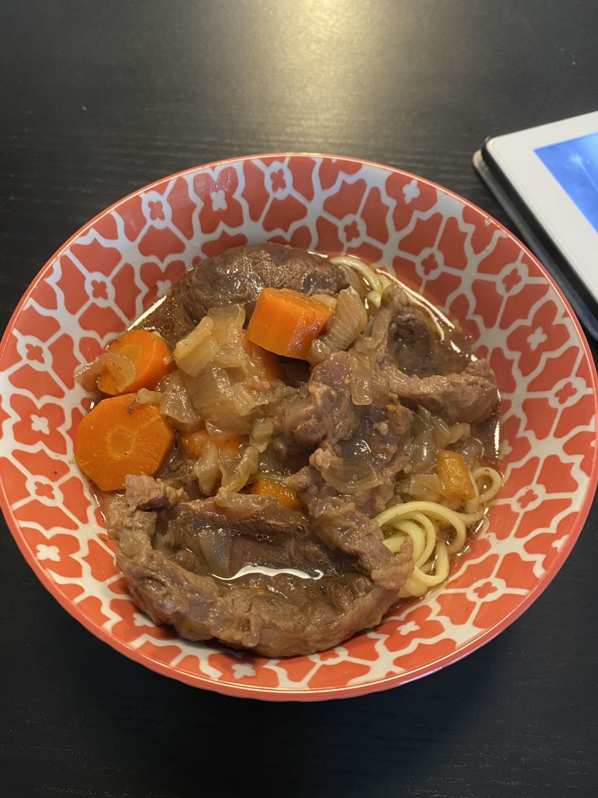

Taiwanese Beef Noodle Soup

Iconic Taiwanese Dish
Taiwanese Beef Noodle Soup is combination of tender beef, rich broth, fresh noodles and bok choy.
This is the dish that makes you feel you are right at home.
This iconic Taiwanese dish takes great effort to make the broth, figure out different spices and making the beef tender.
However, with instant pot, we can simplifed the complicate steps.
Ingredients
- Costco Beef Chunk Short Rib
- Sweet Onions 2 large
- Tomatos 2 large
- Green Onions 2
- Rice Wine 1.5 cups
- Soy Sauce 1/2 cup
- Dried Chiles optional per perference
- sesemen oil 1 teaspoon
- sugar 1 table spoon
- Black pepper 1 teaspoon
- Ginger 3 slices
- Olive oil, 1 talbe spoon
- Water 3 cups
- Dry noodle per perference
- Bok choy or other vegetable
Steps for Soup
- Chop sweet onions, green onions, tomatos, and beef chunk into chunks, about 1/4 to 1/2 inch long.
- Press on Saute, place olive oil, sweet onion, tomatos, green onions and ginger.
- When ginger turned slightly golden, place beef.
- Add wine, soy sause, water, sugar, black pepper, sesemen oil, dry Chiles, and water
- Pressure cook for 30 minutes
Steps for Noodles
- Boil water and place noodles accodrding the package instuction
- Used the boil water to cook bok choy.
Final Step
- Place noodle in bowel, pour beef soup and place green vegetable and some green onions on top